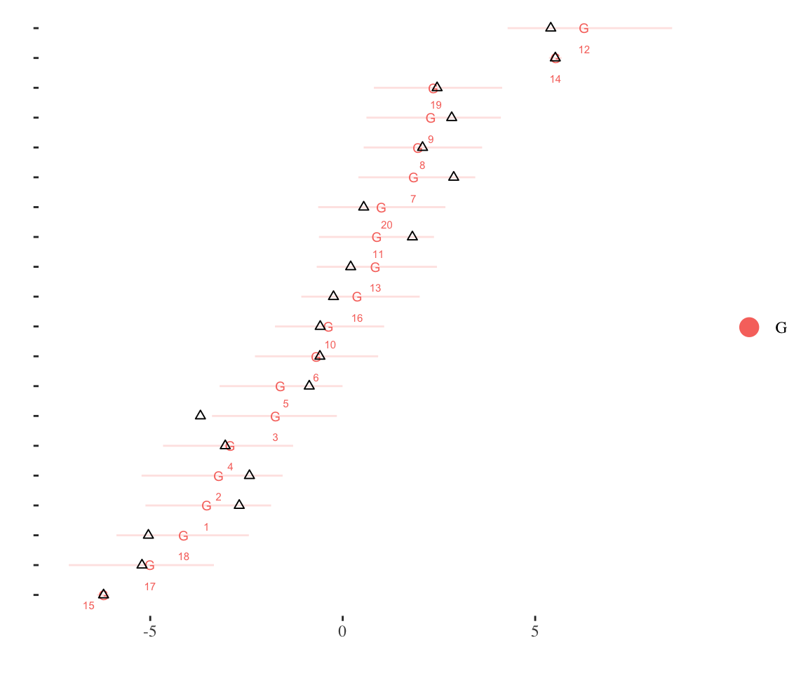
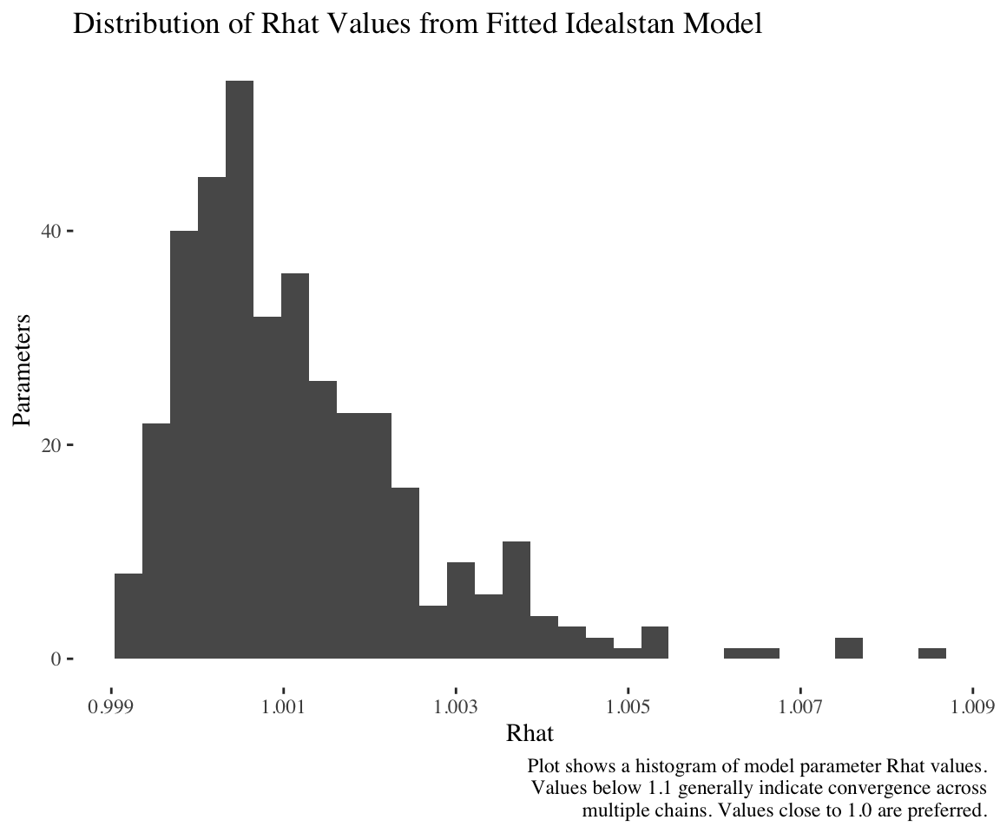
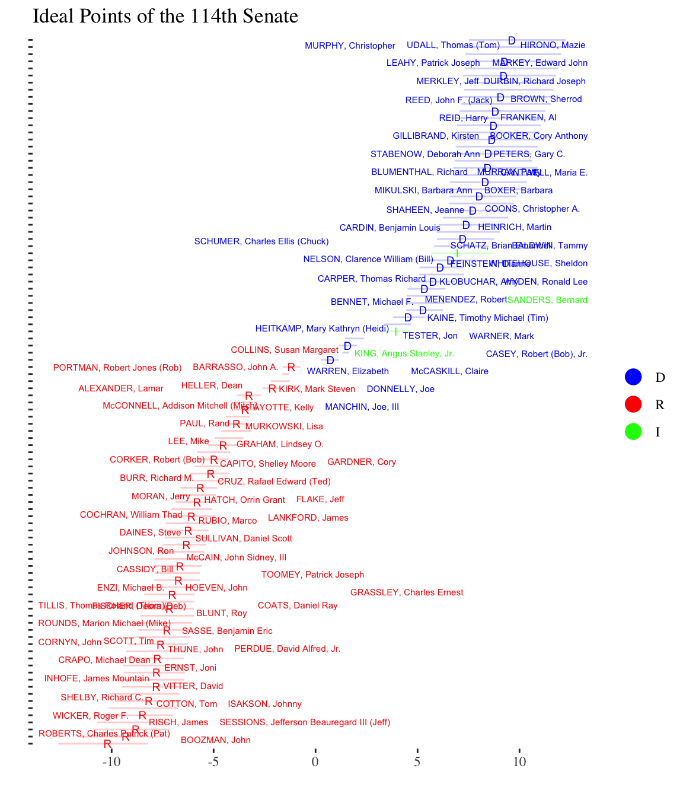
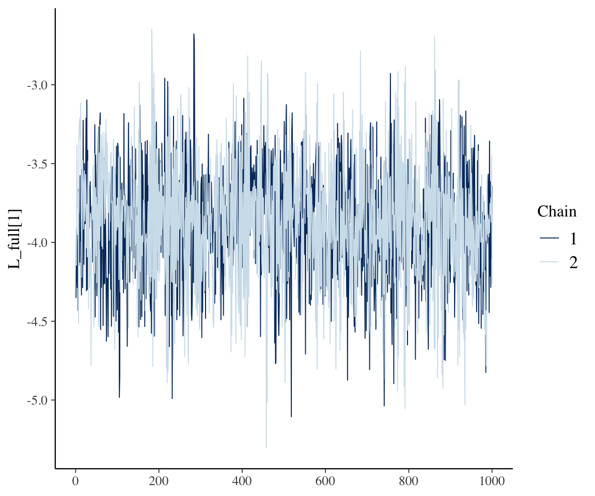

Note: To report bugs with the package, please file an issue on the Github page.
If you use this package, please cite the following:
Kubinec, Robert. “Generalized Ideal Point Models for Time-Varying and Missing-Data Inference”. Working Paper.
Note: At present, idealstan uses the cmdstanr package, which is not on CRAN and must be installed separately. Please see below for instructions.
This package implements IRT (item response theory) ideal point models, which are models designed for situations in which actors make strategic choices that correlate with a unidimensional scale, such as the left-right axis in American politics, disagreement over product design in consumer choice, or psychometric scales in which the direction that items load on the latent scale is unknown. Compared to traditional IRT, ideal point models examine the polarizing influence of a set of items on a set of persons, and has similarities to models based on Euclidean latent spaces, such as multi-dimensional scaling. In fact, this package also implements a version of the latent space model for binary outcomes, which is an alternate formulation of an ideal point model.
The goal of idealstan is to offer a wide variety of ideal point models that can model missing-data, time-varying ideal points, and incorporate a range of outcomes, including binary outcomes, counts, continuous and ordinal responses. In addition, idealstan uses the Stan estimation engine to offer full and variational Bayesian inference for all models so that every model is estimated with uncertainty. Variational inference provides a means to estimate Bayesian models on very large data sets when full Bayesian estimation is impractical. The package also exploits variational inference to automatically identify models instead of requiring users to pre-specify which persons or items in the data to constrain in advance.
However, variational inference can fail and it is difficult to diagnose when it will do so. For that reason, the preferred approach is to use full MCMC inference with multiple computer cores per chain to permit parallel processing (explained below) when there is a need to speed up computation. Variational inference should only be used for exploratory analysis or when there are no other alternatives.
The approach to handling missing data in this package is to model directly strategic censoring in observations. This particular version was developed to account for legislatures in which legislators (persons) are strategically absent for votes on bills (items), but it applies to any social choice situation in which actors’ failure to respond to an item may be a function of their ideal point. This approach to missing data can be usefully applied to many contexts in which a missing outcome is a function of the person’s ideal point (i.e., people will tend to be present in the data when the item is far away or very close to their ideal point). If missingness does not appear to arise as a function of ideal points, the models will still incorporate missing data but will assume it is essentially random.
The package includes the following models:
IRT 2-PL (binary response) ideal point model, no missing-data inflation
IRT 2-PL ideal point model (binary response) with missing- inflation
Ordinal IRT (rating scale) ideal point model no missing-data inflation
Ordinal IRT (rating scale) ideal point model with missing-data inflation
Ordinal IRT (graded response) ideal point model no missing-data inflation
Ordinal IRT (graded response) ideal point model with missing-data inflation
Poisson IRT (Wordfish) ideal point model with no missing data inflation
Poisson IRT (Wordfish) ideal point model with missing-data inflation
Continuous (Gaussian) IRT ideal point model with no missing data
Continuous (Gaussian) IRT ideal point model with missing-data inflation
Positive-Continuous (Log-normal) IRT ideal point model with no missing data
Positive-Continuous (Log-normal) IRT ideal point model with missing-data inflation
Latent Space (binary response) ideal point model with no missing data
Latent Space (binary response) ideal point model with missing-data inflation
In addition, all of these models can be estimated with either time-varying or static ideal points if a column of dates for each item is passed to the model function. This package implements the standard time-varying ideal point model by Martin and Quinn (2002) in which ideal points follow a random walk, i.e., in each time period the ideal points can jump in a random direction. In addition, I have implemented a stationary AR(1) ideal point process for situations in which the random walk model does not appropriately reflect over-time change in ideal points. For more information, please see the vignette about time-varying models.
The package also has extensive plotting functions via ggplot2 for model parameters, particularly the legislator (person) ideal points (ability parameters).
This vignette demonstrates basic usage of the package. I first show some crucial installation pre-requisities.
Installation Instructions
To use idealstan, you first have to have both cmdstanr, an R package, installed and cmdstan, the underlying MCMC library. Unfortunately, cmdstanr is not yet available on CRAN, but you can read complete installation instructions on this page: https://mc-stan.org/cmdstanr/articles/cmdstanr.html.
Assuming you install cmdstan using the functions provided in the package, please allow it to install in the default location. Otherwise you will always have to pass the path of the cmdstan installation to id_estimate.
Simulation of Ordinal IRT with Missing Data
To begin with, we can simulate data from an ordinal ideal-point model in which there are three possible responses corresponding to a legislator voting: yes, abstain and no. An additional category is also simulated that indicates whether a legislator shows up to vote or is absent, which traditional IRT models would record as missing data and would drop from the estimation. This package can instead utilize missing data via a hurdle model in which the censoring of the vote/score data is estimated as a function of individual item/bill intercepts and discrimination parameters for the decision to be absent or present. In other words, if the missing data is a reflection of the person’s ideal point, such as more conservative legislators refusing to show up to vote, than the model will make use of this missing data to infer additional information about the legislators’ ideal points.
The function id_sim_gen() allows you to simulate data from any of the fourteen models currently implemented in idealstan (see previous list). To include missing data, specify the inflate option as TRUE. For example, here we sample data from an ordinal graded response model:
The vote/score matrix in the idealdata object ord_ideal_sim has legislators/persons in the rows and bills/items in the columns. The outcome_disc column has the simulated 3-category ordered outcome.
The function id_estimate will take this processed data and run an IRT ideal point model. To specify the model type, simply include the number of the model in the id_estimate function. It is also possible to have multiple outcome types in a given model, which requires passing the model_id option in the id_make function with a given model number per item in the data. The package also includes the ability to incorporate hierarchical (person or item-level) covariates, as discussed below.
To speed up processing, all of the models in this vignette make use of multiple core parallel computation. To use this option, the specified number of available cores in the ncores option must exceed the number of MCMC chains nchains. cmdstanr will automatically assign cores by dividing the number of chains by the number of cores. In all of the examples in this vignette, I use a machine with 16 cores and estimate 2 chains, so there are 8 cores per chain. By default, id_estimate parallelizes over persons, although that can be changed to items with the map_over_id option (only works with static models).
The package has options for identification that are similar to other IRT packages in which the IDs of legislators/persons to constrain are specified to the id_estimate function. For example, we can use the true values of the simulated legislators to constrain one legislator/person with the highest simulated ideal point and one legislator/person with the lowest ideal point. Each constrained parameter must be fixed to a specific value, preferably at either end of the ideal point spectrum, to identify the model. In particular, two pieces of information are necessary: a value for the high ideal point, and the difference between the high and low points. In this example I pre-specify which parameters to constrain based on the simulated data, and leave the pinned values at their defaults, which are +1 and -1.
[1] "Running pathfinder to find starting values"
Path [1] :Initial log joint density = -1342.673293
Path [1] : Iter log prob ||dx|| ||grad|| alpha alpha0 # evals ELBO Best ELBO Notes
128 -6.806e+02 7.044e-04 4.193e-03 1.000e+00 1.000e+00 3201 -8.910e+02 -8.910e+02
Path [1] :Best Iter: [8] ELBO (-869.800307) evaluations: (3201)
Finished in 0.5 seconds.
[1] "Estimating model with full Stan MCMC sampler."
Init values were only set for a subset of parameters.
Missing init values for the following parameters:
- chain 1: m_sd_free, gp_sd_free, ls_int, ls_int_abs, L_tp1_var, L_AR1, steps_votes3, steps_votes4, steps_votes5, steps_votes6, steps_votes7, steps_votes8, steps_votes9, steps_votes10, steps_votes_grm4, steps_votes_grm5, steps_votes_grm6, steps_votes_grm7, steps_votes_grm8, steps_votes_grm9, steps_votes_grm10, extra_sd, time_var_gp_free, time_var_free, a_raw
- chain 2: m_sd_free, gp_sd_free, ls_int, ls_int_abs, L_tp1_var, L_AR1, steps_votes3, steps_votes4, steps_votes5, steps_votes6, steps_votes7, steps_votes8, steps_votes9, steps_votes10, steps_votes_grm4, steps_votes_grm5, steps_votes_grm6, steps_votes_grm7, steps_votes_grm8, steps_votes_grm9, steps_votes_grm10, extra_sd, time_var_gp_free, time_var_free, a_raw
To disable this message use options(cmdstanr_warn_inits = FALSE).
Running MCMC with 2 parallel chains, with 4 thread(s) per chain...
Chain 1 Iteration: 1 / 2000 [ 0%] (Warmup)
Chain 1 Informational Message: The current Metropolis proposal is about to be rejected because of the following issue:
Chain 1 Exception: Exception: ordered_logistic: Cut-points is not a valid ordered vector. The element at 2 is -26.066, but should be greater than the previous element, -26.066 (in '/Library/Frameworks/R.framework/Versions/4.4-arm64/Resources/library/idealstan/stan_files//chunks/model_types_mm_map_persons.stan', line 378, column 6, included from
Chain 1 '/Library/Frameworks/R.framework/Versions/4.4-arm64/Resources/library/idealstan/stan_files//chunks/map_func.stan', line 401, column 0, included from
Chain 1 '/var/folders/4d/m4b3zyn966d7ctnd4hz4zvfh0000gs/T/Rtmp7rBptZ/model-1575a27f0eea7.stan', line 45, column 0) (in '/var/folders/4d/m4b3zyn966d7ctnd4hz4zvfh0000gs/T/Rtmp7rBptZ/model-1575a27f0eea7.stan', line 632, column 2 to line 735, column 20)
Chain 1 If this warning occurs sporadically, such as for highly constrained variable types like covariance matrices, then the sampler is fine,
Chain 1 but if this warning occurs often then your model may be either severely ill-conditioned or misspecified.
Chain 1
Chain 2 Iteration: 1 / 2000 [ 0%] (Warmup)
Chain 2 Informational Message: The current Metropolis proposal is about to be rejected because of the following issue:
Chain 2 Exception: Exception: ordered_logistic: Cut-points is not a valid ordered vector. The element at 2 is 16.6885, but should be greater than the previous element, 16.6885 (in '/Library/Frameworks/R.framework/Versions/4.4-arm64/Resources/library/idealstan/stan_files//chunks/model_types_mm_map_persons.stan', line 378, column 6, included from
Chain 2 '/Library/Frameworks/R.framework/Versions/4.4-arm64/Resources/library/idealstan/stan_files//chunks/map_func.stan', line 401, column 0, included from
Chain 2 '/var/folders/4d/m4b3zyn966d7ctnd4hz4zvfh0000gs/T/Rtmp7rBptZ/model-1575a27f0eea7.stan', line 45, column 0) (in '/var/folders/4d/m4b3zyn966d7ctnd4hz4zvfh0000gs/T/Rtmp7rBptZ/model-1575a27f0eea7.stan', line 632, column 2 to line 735, column 20)
Chain 2 If this warning occurs sporadically, such as for highly constrained variable types like covariance matrices, then the sampler is fine,
Chain 2 but if this warning occurs often then your model may be either severely ill-conditioned or misspecified.
Chain 2
Chain 1 Informational Message: The current Metropolis proposal is about to be rejected because of the following issue:
Chain 1 Exception: Exception: ordered_logistic: Cut-points is not a valid ordered vector. The element at 2 is -1.1455, but should be greater than the previous element, -1.1455 (in '/Library/Frameworks/R.framework/Versions/4.4-arm64/Resources/library/idealstan/stan_files//chunks/model_types_mm_map_persons.stan', line 378, column 6, included from
Chain 1 '/Library/Frameworks/R.framework/Versions/4.4-arm64/Resources/library/idealstan/stan_files//chunks/map_func.stan', line 401, column 0, included from
Chain 1 '/var/folders/4d/m4b3zyn966d7ctnd4hz4zvfh0000gs/T/Rtmp7rBptZ/model-1575a27f0eea7.stan', line 45, column 0) (in '/var/folders/4d/m4b3zyn966d7ctnd4hz4zvfh0000gs/T/Rtmp7rBptZ/model-1575a27f0eea7.stan', line 632, column 2 to line 735, column 20)
Chain 1 If this warning occurs sporadically, such as for highly constrained variable types like covariance matrices, then the sampler is fine,
Chain 1 but if this warning occurs often then your model may be either severely ill-conditioned or misspecified.
Chain 1
Chain 2 Informational Message: The current Metropolis proposal is about to be rejected because of the following issue:
Chain 2 Exception: Exception: ordered_logistic: Cut-points is not a valid ordered vector. The element at 2 is -3.16394, but should be greater than the previous element, -3.16394 (in '/Library/Frameworks/R.framework/Versions/4.4-arm64/Resources/library/idealstan/stan_files//chunks/model_types_mm_map_persons.stan', line 378, column 6, included from
Chain 2 '/Library/Frameworks/R.framework/Versions/4.4-arm64/Resources/library/idealstan/stan_files//chunks/map_func.stan', line 401, column 0, included from
Chain 2 '/var/folders/4d/m4b3zyn966d7ctnd4hz4zvfh0000gs/T/Rtmp7rBptZ/model-1575a27f0eea7.stan', line 45, column 0) (in '/var/folders/4d/m4b3zyn966d7ctnd4hz4zvfh0000gs/T/Rtmp7rBptZ/model-1575a27f0eea7.stan', line 632, column 2 to line 735, column 20)
Chain 2 If this warning occurs sporadically, such as for highly constrained variable types like covariance matrices, then the sampler is fine,
Chain 2 but if this warning occurs often then your model may be either severely ill-conditioned or misspecified.
Chain 2
Chain 1 Informational Message: The current Metropolis proposal is about to be rejected because of the following issue:
Chain 1 Exception: Exception: ordered_logistic: Cut-points is not a valid ordered vector. The element at 2 is -1.48503, but should be greater than the previous element, -1.48503 (in '/Library/Frameworks/R.framework/Versions/4.4-arm64/Resources/library/idealstan/stan_files//chunks/model_types_mm_map_persons.stan', line 378, column 6, included from
Chain 1 '/Library/Frameworks/R.framework/Versions/4.4-arm64/Resources/library/idealstan/stan_files//chunks/map_func.stan', line 401, column 0, included from
Chain 1 '/var/folders/4d/m4b3zyn966d7ctnd4hz4zvfh0000gs/T/Rtmp7rBptZ/model-1575a27f0eea7.stan', line 45, column 0) (in '/var/folders/4d/m4b3zyn966d7ctnd4hz4zvfh0000gs/T/Rtmp7rBptZ/model-1575a27f0eea7.stan', line 632, column 2 to line 735, column 20)
Chain 1 If this warning occurs sporadically, such as for highly constrained variable types like covariance matrices, then the sampler is fine,
Chain 1 but if this warning occurs often then your model may be either severely ill-conditioned or misspecified.
Chain 1
Chain 2 Iteration: 500 / 2000 [ 25%] (Warmup)
Chain 1 Informational Message: The current Metropolis proposal is about to be rejected because of the following issue:
Chain 1 Exception: Exception: ordered_logistic: Cut-points is not a valid ordered vector. The element at 2 is -14.0103, but should be greater than the previous element, -14.0103 (in '/Library/Frameworks/R.framework/Versions/4.4-arm64/Resources/library/idealstan/stan_files//chunks/model_types_mm_map_persons.stan', line 378, column 6, included from
Chain 1 '/Library/Frameworks/R.framework/Versions/4.4-arm64/Resources/library/idealstan/stan_files//chunks/map_func.stan', line 401, column 0, included from
Chain 1 '/var/folders/4d/m4b3zyn966d7ctnd4hz4zvfh0000gs/T/Rtmp7rBptZ/model-1575a27f0eea7.stan', line 45, column 0) (in '/var/folders/4d/m4b3zyn966d7ctnd4hz4zvfh0000gs/T/Rtmp7rBptZ/model-1575a27f0eea7.stan', line 632, column 2 to line 735, column 20)
Chain 1 If this warning occurs sporadically, such as for highly constrained variable types like covariance matrices, then the sampler is fine,
Chain 1 but if this warning occurs often then your model may be either severely ill-conditioned or misspecified.
We can then check and see how well the Stan estimation engine was able to capture the “true” values used in the simulation by plotting the true ideal points relative to the estimated ones:
id_plot_legis(ord_ideal_est,show_true =TRUE)
Joining with `by = join_by(id_num)`
Joining with `by = join_by(id_num)`

Given the small amount of data used to estimate the model, the imprecision with which the ideal points were recovered is not surprising.
To automatically identify the model, simply change the fixtype option to 'vb_full'. By default, the model will select the highest and lowest ideal points to constrain by running an approximation to the full posterior using cmdstanr’s pathfinder() function. While this method works, the exact rotation is not known a priori, and so it may produce a different result with multiple runs. Note that there will be two pathfinder runs as the first run identifies the parameters to constrain and the second is used to create starting values for the Hamiltonian Monte Carlo estimation.
For example, using our simulated data and identifying the model automatically with 'vb_full':
[1] "(First Step): Estimating model with Pathfinder (variational inference) to identify modes to constrain."
Path [1] :Initial log joint density = -1776.866082
Path [1] : Iter log prob ||dx|| ||grad|| alpha alpha0 # evals ELBO Best ELBO Notes
82 -6.962e+02 1.119e-03 2.086e-03 1.000e+00 1.000e+00 2051 -8.258e+02 -8.258e+02
Path [1] :Best Iter: [81] ELBO (-822.576092) evaluations: (2051)
Finished in 0.4 seconds.
[1] "Running pathfinder to find starting values"
Path [1] :Initial log joint density = -1277.419371
Path [1] : Iter log prob ||dx|| ||grad|| alpha alpha0 # evals ELBO Best ELBO Notes
142 -6.804e+02 1.046e-03 4.382e-03 9.299e-01 9.299e-01 3551 -9.032e+02 -9.032e+02
Path [1] :Best Iter: [4] ELBO (-852.263399) evaluations: (3551)
Finished in 0.5 seconds.
[1] "Estimating model with full Stan MCMC sampler."
Init values were only set for a subset of parameters.
Missing init values for the following parameters:
- chain 1: m_sd_free, gp_sd_free, ls_int, ls_int_abs, L_tp1_var, L_AR1, steps_votes3, steps_votes4, steps_votes5, steps_votes6, steps_votes7, steps_votes8, steps_votes9, steps_votes10, steps_votes_grm4, steps_votes_grm5, steps_votes_grm6, steps_votes_grm7, steps_votes_grm8, steps_votes_grm9, steps_votes_grm10, extra_sd, time_var_gp_free, time_var_free, a_raw
- chain 2: m_sd_free, gp_sd_free, ls_int, ls_int_abs, L_tp1_var, L_AR1, steps_votes3, steps_votes4, steps_votes5, steps_votes6, steps_votes7, steps_votes8, steps_votes9, steps_votes10, steps_votes_grm4, steps_votes_grm5, steps_votes_grm6, steps_votes_grm7, steps_votes_grm8, steps_votes_grm9, steps_votes_grm10, extra_sd, time_var_gp_free, time_var_free, a_raw
To disable this message use options(cmdstanr_warn_inits = FALSE).
Running MCMC with 2 parallel chains, with 4 thread(s) per chain...
Chain 1 Iteration: 1 / 2000 [ 0%] (Warmup)
Chain 1 Informational Message: The current Metropolis proposal is about to be rejected because of the following issue:
Chain 1 Exception: Exception: ordered_logistic: Cut-points is not a valid ordered vector. The element at 2 is -11.7372, but should be greater than the previous element, -11.7372 (in '/Library/Frameworks/R.framework/Versions/4.4-arm64/Resources/library/idealstan/stan_files//chunks/model_types_mm_map_persons.stan', line 378, column 6, included from
Chain 1 '/Library/Frameworks/R.framework/Versions/4.4-arm64/Resources/library/idealstan/stan_files//chunks/map_func.stan', line 401, column 0, included from
Chain 1 '/var/folders/4d/m4b3zyn966d7ctnd4hz4zvfh0000gs/T/Rtmp7rBptZ/model-1575a27f0eea7.stan', line 45, column 0) (in '/var/folders/4d/m4b3zyn966d7ctnd4hz4zvfh0000gs/T/Rtmp7rBptZ/model-1575a27f0eea7.stan', line 632, column 2 to line 735, column 20)
Chain 1 If this warning occurs sporadically, such as for highly constrained variable types like covariance matrices, then the sampler is fine,
Chain 1 but if this warning occurs often then your model may be either severely ill-conditioned or misspecified.
Chain 1
Chain 2 Iteration: 1 / 2000 [ 0%] (Warmup)
Chain 2 Informational Message: The current Metropolis proposal is about to be rejected because of the following issue:
Chain 2 Exception: Exception: ordered_logistic: Cut-points is not a valid ordered vector. The element at 2 is 59.7902, but should be greater than the previous element, 59.7902 (in '/Library/Frameworks/R.framework/Versions/4.4-arm64/Resources/library/idealstan/stan_files//chunks/model_types_mm_map_persons.stan', line 378, column 6, included from
Chain 2 '/Library/Frameworks/R.framework/Versions/4.4-arm64/Resources/library/idealstan/stan_files//chunks/map_func.stan', line 401, column 0, included from
Chain 2 '/var/folders/4d/m4b3zyn966d7ctnd4hz4zvfh0000gs/T/Rtmp7rBptZ/model-1575a27f0eea7.stan', line 45, column 0) (in '/var/folders/4d/m4b3zyn966d7ctnd4hz4zvfh0000gs/T/Rtmp7rBptZ/model-1575a27f0eea7.stan', line 632, column 2 to line 735, column 20)
Chain 2 If this warning occurs sporadically, such as for highly constrained variable types like covariance matrices, then the sampler is fine,
Chain 2 but if this warning occurs often then your model may be either severely ill-conditioned or misspecified.
Chain 2
Chain 2 Informational Message: The current Metropolis proposal is about to be rejected because of the following issue:
Chain 2 Exception: Exception: ordered_logistic: Cut-points is not a valid ordered vector. The element at 2 is -8.43665, but should be greater than the previous element, -8.43665 (in '/Library/Frameworks/R.framework/Versions/4.4-arm64/Resources/library/idealstan/stan_files//chunks/model_types_mm_map_persons.stan', line 378, column 6, included from
Chain 2 '/Library/Frameworks/R.framework/Versions/4.4-arm64/Resources/library/idealstan/stan_files//chunks/map_func.stan', line 401, column 0, included from
Chain 2 '/var/folders/4d/m4b3zyn966d7ctnd4hz4zvfh0000gs/T/Rtmp7rBptZ/model-1575a27f0eea7.stan', line 45, column 0) (in '/var/folders/4d/m4b3zyn966d7ctnd4hz4zvfh0000gs/T/Rtmp7rBptZ/model-1575a27f0eea7.stan', line 632, column 2 to line 735, column 20)
Chain 2 If this warning occurs sporadically, such as for highly constrained variable types like covariance matrices, then the sampler is fine,
Chain 2 but if this warning occurs often then your model may be either severely ill-conditioned or misspecified.
We can see from the plot of the Rhats, which is an MCMC convergence diagnostic, that all the Rhats are below 1.1, which is a good (though not perfect) sign that the model is fully identified:
id_plot_rhats(ord_ideal_est)
`stat_bin()` using `bins = 30`. Pick better value with `binwidth`.

id_plot_legis(ord_ideal_est,show_true = T)
Joining with `by = join_by(id_num)`
Joining with `by = join_by(id_num)`
In general, it is always a good idea to check the Rhats before proceeding with further analysis. Identification of time-varying ideal point models can be more complicated and is discussed in the accompanying vignette. As can be seen above, while the Pathfinder algorithm can identify a mode, it may not be the mode that is theoretically interesting.
Empirical Example: U.S. Senate
This package was developed for datasets that are in a long format, i.e., one row per person/legislator, item/bill, and any other covariate. This data format departs from the traditional way of storing/using IRT/ideal point data, which is more commonly stored in a wide format with legislators/persons in the rows and items/bills in the columns.
To demonstrate how the package functions empirically, I include in the package a partial voting record of the 114th Senate (excluding rollcall votes without significant disagreement) from the website www.voteview.com. We can convert this data, which is provided in a long data frame, to an idealdata object suitable for estimation by using the id_make function. Because the intention is to fit a binary outcome model (yes or no votes on bills), I recode the outcome to be 0 for no votes and 1 for yes votes as idealstan expects binary outcomes to be coded this way.
First, you can see that the data are in long form because there is one row for every vote cast by a legislator, in this case Senator Sessions. The outcome variable is cast_code. This variable is coded as a factor variable with the levels in the order we would want for a binary outcome, i.e, 'No' is before 'Yes'. Each item in the model is a recorded vote in the Senate, the numbers of which are listed in column rollnumber. We also know the dates of the individual items (rollcalls), which we will use in the time-varying ideal point vignette to model time-varying ideal points.
The table shows that there are roughly twice as many yes votes versus no votes, with a small minority of absences. In this case, absences can be counted as missing data.
To create an idealdata object for modeling from our long data frame, we pass it to the id_make function and specify the names of the columns that correspond to person IDs, item IDs, group IDs (i.e., party), time IDs and the outcome, although only person, item and outcome are required for the function to work for a static model. Because this is a discrete model, we pass the column name for the outcome to the outcome_disc argument. If we also had continuous models and data, we would need to specify the model_id column with the correct model number (see table above) and put all continuous (real) data in a separate column which we could pass to the outcome_cont argument.
Note that all missing data should be coded as NA before passing it to id_make.
There are many other columns in the senate114 data. These can be used as person or item/bill covariates, as is discussed at the end of the vignette, but are essentially ignored unless specified to the id_make function.
# set missing (Absent) to NAsenate114$cast_code <-ifelse(senate114$cast_code=="Absent",NA,senate114$cast_code)# recode outcome to 0/1senate114$cast_code <- senate114$cast_code -1senate_data <-id_make(senate114,outcome_disc ='cast_code',person_id ='bioname',item_id ='rollnumber',group_id='party_code',time_id='date')
We can then run a binary IRT ideal point model in which absences on particular bills are treated as a “hurdle” that the legislator must overcome in order to show up to vote. To do so, we specify model_type=2, which signifies a binary IRT model with missing-data (absence) inflation (see list above). In essence, the model is calculating a separate ideal point position for each bill/item that represents the bill’s importance to different senators. Only if a bill is relatively salient will a legislator choose to show up and vote.
This same missing-data mechanism also applies more broadly to situations of social choice. Any time that missing data might be a function of ideal points–people with certain ideal points are likely to avoid giving an answer–then these values should be marked as NA in the data and an inflated model type should be used.
Ideal points are not identified without further information about the latent scale, especially its direction: should conservative ideal points be listed as positive or negative? To identify the latent scale, I constrain a conservative senator (John Barrasso) to be positive, and a liberal senator, Elizabeth Warren, to be negative in order to identify the polarity in the model. I have to pass in the names of the legislators as they exist in the IDs present in the senate114 data (column bionames). The person ideal point parameters are pinned to +1 and -1 but these values can be changed with the fix_high and fix_low function arguments for id_estimate.
It is important to note that the model can also be identified by fixing item (bill) discrimination parameters by setting the const_type argument to "items". Then the values for restrict_ind_high and restrict_ind_low should be set to the character values of names for items in the data. Identifying the model based on item discrimination can have some excellent properties as it leaves all of the person ideal points to float. It is also very useful with time-varying models where fixing person ideal points can be very challenging.
To make the model fit faster, I set nchains at 2 and ncores at 16, which will allow for 8 cores to be used per chain for parallel processing (assuming of course the computer has access to 16 cores).
sen_est <-id_estimate(senate_data,model_type =1,ncores=8,nchains=2,fixtype='prefix',restrict_ind_high ="WARREN, Elizabeth",restrict_ind_low="BARRASSO, John A.",seed=84520)
[1] "Running pathfinder to find starting values"
Finished in 3.8 seconds.
[1] "Estimating model with full Stan MCMC sampler."
Init values were only set for a subset of parameters.
Missing init values for the following parameters:
- chain 1: m_sd_free, gp_sd_free, ls_int, ls_int_abs, L_tp1_var, L_AR1, steps_votes3, steps_votes4, steps_votes5, steps_votes6, steps_votes7, steps_votes8, steps_votes9, steps_votes10, steps_votes_grm3, steps_votes_grm4, steps_votes_grm5, steps_votes_grm6, steps_votes_grm7, steps_votes_grm8, steps_votes_grm9, steps_votes_grm10, extra_sd, time_var_gp_free, time_var_free, a_raw
- chain 2: m_sd_free, gp_sd_free, ls_int, ls_int_abs, L_tp1_var, L_AR1, steps_votes3, steps_votes4, steps_votes5, steps_votes6, steps_votes7, steps_votes8, steps_votes9, steps_votes10, steps_votes_grm3, steps_votes_grm4, steps_votes_grm5, steps_votes_grm6, steps_votes_grm7, steps_votes_grm8, steps_votes_grm9, steps_votes_grm10, extra_sd, time_var_gp_free, time_var_free, a_raw
To disable this message use options(cmdstanr_warn_inits = FALSE).
Running MCMC with 2 parallel chains, with 4 thread(s) per chain...
Chain 2 finished in 124.2 seconds.
Chain 1 finished in 125.4 seconds.
Both chains finished successfully.
Mean chain execution time: 124.8 seconds.
Total execution time: 125.5 seconds.
id_plot_legis(sen_est,person_ci_alpha=0.2) +scale_color_manual(values=c(D='blue',R='red',I='green')) +ggtitle('Ideal Points of the 114th Senate')
Joining with `by = join_by(id_num)`

The id_plot function has many other options which are documented in the help files. One notable option, though, is to plot bill midpoints along with the legislator ideal points. The midpoints show the line of equiprobability, i.e., at what ideal point is a legislator with that ideal point indifferent to voting on a bill (or answering an item correctly). To plot a bill midpoint overlay, simply include the character ID of the bill (equivalent to the column name of the bill in the rollcall vote matrix) as the item_plot option:
id_plot_legis(sen_est,person_ci_alpha=0.1,item_plot='94') +scale_color_manual(values=c(D='blue',R='red',I='green')) +ggtitle('Ideal Points of the 114th Senate with Vote 94 Midpoint')
Joining with `by = join_by(id_num)`
The 50th bill in the 114 Senate shows very high discrimination: the bill midpoint is right in the middle of the ideal point distribution, with most Democrats voting yes and most Republicans voting no. The two rug lines at the bottom of the plot show the high density posterior interval for the bill midpoint, and as can be seen, the uncertainty only included those legislators near the very center of the distribution.
To look at the bill’s absence midpoints, simply change the item_plot_type parameter to the id_plot function:
The wide high-posterior density (HPD) interval of the absence midpoint ruglines shows that absences are very uninformative of ideal points for this particular bill (as is common in the Senate where absences are very rare).
Parameter Values
We can obtain summary estimates of all the ideal points and item/bill discrimination/difficulty parameters using the summary function that provides the median value of the parameters in addition to a specified posterior density interval (i.e., 5%-95%). For example, we can extract summaries for the ideal points:
ideal_pts_sum <-summary(sen_est,pars='ideal_pts')
Joining with `by = join_by(id_num)`
knitr::kable(head(ideal_pts_sum))
Person
Group
Time_Point
Low Posterior Interval
Posterior Median
High Posterior Interval
Parameter Name
WYDEN, Ronald Lee
D
1
6.357603
7.693815
9.328187
L_full[100]
BOXER, Barbara
D
1
7.192740
8.864315
11.145765
L_full[10]
BROWN, Sherrod
D
1
7.743163
9.604320
12.162100
L_full[11]
BURR, Richard M.
R
1
-6.929614
-5.999620
-5.127497
L_full[12]
CANTWELL, Maria E.
D
1
7.356876
9.024715
11.223125
L_full[13]
CAPITO, Shelley Moore
R
1
-6.081596
-5.252120
-4.433251
L_full[14]
Parameter Name is the name of the parameter in the underlying Stan code, which can be useful f you want to peruse the fitted Stan model (and can be accessed as given in the code below). The name of the parameters for ideal points in the Stan model is L_full (as seen in the summary from above).
stan_obj <- sen_est@stan_samples# show the stan_obj$draws(c("L_full[1]",'L_full[2]','L_full[3]'))
If we know the name of the Stan parameter, we can look at the trace plot to see how the quality of the Markov Chain Monte Carlo (MCMC) sampling used to fit the model. A good trace plot shows a bouncy line that is stable around an average value. For more info, see the Stan documentation.
stan_trace(sen_est,par='L_full[1]')

Finally we can also extract all of the posterior iterations to do additional calculations that average over posterior uncertainty by changing the aggregate option in summary. In the following code, I access the individual posterior iterations for the item/bill parameters, including difficulty (average probability of voting yes), discrimination (how strongly the item/bill loads on either end of the ideal point scale) and the midpoints (position where someone with that ideal point would be indifferent to voting yes/no).
Note: ideal point marginal effects have yet to be implemented as a separate function. In this section I demonstrate how to estimate these effects using R code.
Finally, we can also fit a model where we include a covariate that varies by person/legislator. To do so, we need to pass a one-sided formula to the id_make function to prepare the data accordingly. By way of example, we will include a model where we include an interaction between party ID (party_code) and the legislator’s age to see if younger/older legislators are more or less conservative. Because this is a static model, the effect of the covariate is averaged over all of the bills in the dataset and all the legislators in the dataset without taking into account the order or time period of the bills.
It is important to note that for static ideal point models, covariates are only defined over the legislators/persons who are not being used as constraints in the model, such as John Barasso and Elizabeth Warren in this model.
senate114$age <-2018- senate114$born# center the variablesenate114$age <- senate114$age -mean(senate114$age)# put in units of 10 yearssenate114$age <- senate114$age /10# doing this will improve estimation speed (variables mean-centered and with an SD# not much bigger than 1 or 2)senate_data <-id_make(senate114,outcome_disc ='cast_code',person_id ='bioname',item_id ='rollnumber',group_id='party_code',time_id='date',person_cov =~party_code*age)sen_est_cov <-id_estimate(senate_data,model_type =1,fixtype='prefix',nchains=2,ncores=8,restrict_ind_high ="BARRASSO, John A.",restrict_ind_low="WARREN, Elizabeth",seed=84520)
[1] "Running pathfinder to find starting values"
Finished in 6.1 seconds.
[1] "Estimating model with full Stan MCMC sampler."
Init values were only set for a subset of parameters.
Missing init values for the following parameters:
- chain 1: m_sd_free, gp_sd_free, ls_int, ls_int_abs, L_tp1_var, L_AR1, steps_votes3, steps_votes4, steps_votes5, steps_votes6, steps_votes7, steps_votes8, steps_votes9, steps_votes10, steps_votes_grm3, steps_votes_grm4, steps_votes_grm5, steps_votes_grm6, steps_votes_grm7, steps_votes_grm8, steps_votes_grm9, steps_votes_grm10, extra_sd, time_var_gp_free, time_var_free, a_raw
- chain 2: m_sd_free, gp_sd_free, ls_int, ls_int_abs, L_tp1_var, L_AR1, steps_votes3, steps_votes4, steps_votes5, steps_votes6, steps_votes7, steps_votes8, steps_votes9, steps_votes10, steps_votes_grm3, steps_votes_grm4, steps_votes_grm5, steps_votes_grm6, steps_votes_grm7, steps_votes_grm8, steps_votes_grm9, steps_votes_grm10, extra_sd, time_var_gp_free, time_var_free, a_raw
To disable this message use options(cmdstanr_warn_inits = FALSE).
Running MCMC with 2 parallel chains, with 4 thread(s) per chain...
Chain 2 finished in 245.6 seconds.
Chain 1 finished in 246.1 seconds.
Both chains finished successfully.
Mean chain execution time: 245.8 seconds.
Total execution time: 246.3 seconds.
As discussed in the associated working paper (https://osf.io/preprints/osf/8j2bt), ideal point marginal effects can be derived from idealstan models in which the raw relationship between the hierarchical covariates and the actual outcomes (in this case, votes) can be shown at the item (vote) level. At present, this feature is not yet implemented in a function, but it can be calculated using code as shown below for a given covariate. In this case, we will look at the marginal effect of age on votes conditional on party affiliation. To do so, we will extract the hierarchical covariate effects from the underlying cmdstanr model and then use the id_post_pred, which allows us to predict the outcome given new data, to calculate the effects.
# First make two new datasets that have different values for age# difference is quite small (0.001)# This is for numerical differentiation as described in the working paper# We need to begin with our original dataset that we passed to the id_make function# parameter for the change we will calculate, just needs to be very small eps <-1e-5 new_data1 <-mutate(senate114,age = age - eps /2) new_data2 <-mutate(senate114,age = age + eps /2)# now predict new outcome distributions given these slightly different datasets# use draws="all" to avoid comparing different draws to each other sen_mod_pred1 <-id_post_pred(sen_est_cov,newdata=new_data1,use_cores=4,draws="all",type="epred")
[1] "Processing posterior replications for 23352 scores using all posterior samples out of a total of 2000 samples."
[1] "Adding in hierarchical covariates values to the time-varying person scores."
[1] "Collapsing covariates to person and time IDs."
[1] "Done!"
[1] "Now on model 1"
[1] "Processing posterior replications for 23352 scores using all posterior samples out of a total of 2000 samples."
[1] "Adding in hierarchical covariates values to the time-varying person scores."
[1] "Collapsing covariates to person and time IDs."
[1] "Done!"
[1] "Now on model 1"
# now we need to difference the datasets at the item level to calculate the effects# this will create some lists that will then be appended together to a big data frame# with one observation per posterior drawprint("Looping over items")
[1] "Looping over items"
# difference the predictions c1 <- purrr::map2(sen_mod_pred1[[1]], sen_mod_pred2[[1]],function(small,big) {# difference the effects (big - small)/eps })# combine into datasets for each item with item id + person (senator) id c2 <-lapply(c1, function(mat) { out_data <-attr(mat, "data")colnames(mat) <- out_data$person_idas_tibble(mat) %>%mutate(draws=1:n(),item_id=unique(out_data$item_id)) %>%gather(key="person_id",value="estimate",-draws,-item_id) %>%mutate(person_id=as.numeric(person_id),estimate=as.numeric(estimate)) }) %>% bind_rows# merge in some original data to_merge <-mutate(sen_est_cov@score_data@score_matrix, item_orig=item_id,person_orig=person_id,person_id=as.numeric(person_id),item_id=as.numeric(item_id)) %>%select(person_id, item_id, group_id,item_orig, person_orig) %>% distinct# add in party data so we can calculate party-specific effects c2 <-left_join(c2, to_merge, by=c("item_id","person_id"))# get effect separately by each item and party# first have to aggregate to party level by draw, then take average by item by_party <-group_by(c2, draws, group_id, item_id, item_orig) %>%summarize(mean_est1=mean(estimate)) %>%group_by(group_id, item_id, item_orig) %>%summarize(mean_est=mean(mean_est1),low_est=quantile(mean_est1, .05),high_est=quantile(mean_est1, .95))
`summarise()` has grouped output by 'draws', 'group_id', 'item_id'. You can
override using the `.groups` argument.
`summarise()` has grouped output by 'group_id', 'item_id'. You can override
using the `.groups` argument.
# merge in item discrimination to add some color / show high-discrim votes item_discrim <-filter(sen_est_cov@summary,grepl(x=variable, pattern="sigma\\_reg\\_free")) %>%mutate(item_id=as.numeric(stringr::str_extract(variable, "[0-9]+"))) by_party <-left_join(by_party,select(item_discrim, median, item_id))
Joining with `by = join_by(item_id)`
# plot the result by_party %>%mutate(group_id=factor(group_id,levels=c("D","R","I"),labels=c("Democrats", "Republicans","Independent"))) %>%ggplot(aes(y=mean_est,x=reorder(item_id,mean_est))) +geom_linerange(aes(ymin=low_est,ymax=high_est,colour=`median`)) +facet_wrap(~group_id,scales="free_x") + ggthemes::theme_tufte() +scale_colour_viridis_c(name="Discrimination") +coord_flip() +labs(y="Marginal Change in Probability of Voting",x="Rollcalls",caption="Marginal effect of age on voting on a specific rollcall in the Senate.") +geom_hline(yintercept=0,linetype=2) + ggthemes::theme_clean() +theme(axis.text.y=element_blank(),axis.ticks.y=element_blank()) +theme(legend.position ="bottom")
Because these covariates are on the ideal point scale, the meaning of the scale in terms of party ideology must be kept in mind in order to interpret the plot. The way to interpret these plots is that for Republicans, increasing age is associated with voting for bills that are more conservative, while for Democrats, the opposite is true. In other words, older party members tend to vote for bills that are ideologically more extreme than younger party members, though the relationship is strongest for Republicans vs. others. Keeping the direction of the scale in mind is crucial for understanding hierarchical covariates in ideal point models.
We can also extract the covariate summary values using the summary function: